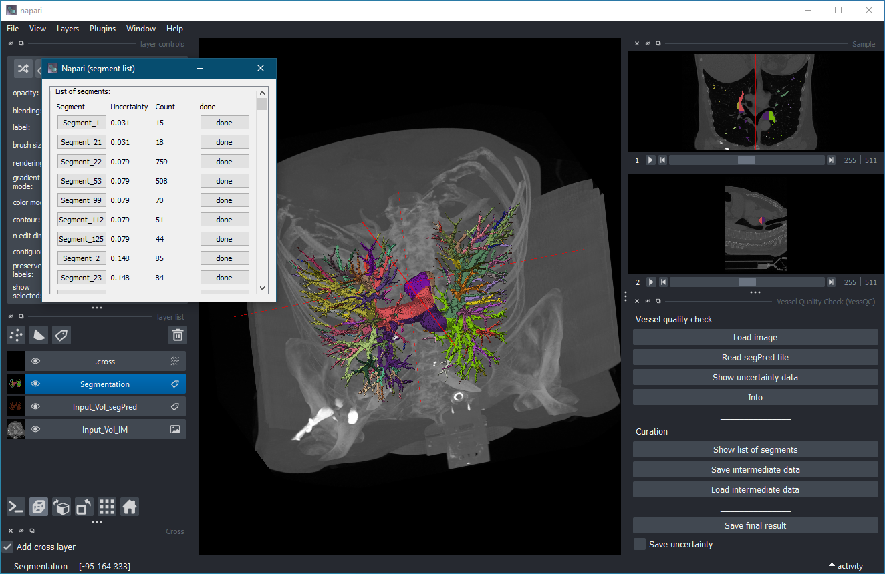

A napari plugin for uncertainty-based quality control and manual correction of 3D blood vessel segmentations.
VessQC is a plugin for the image viewer napari. It is designed for the inspection and correction of 3D vessel segmentations generated by machine-learning pipelines.
The plugin combines:
The plugin is particularly useful for workflows in which:

Install the released version from PyPI:
bash
pip install VessQC
Install the latest development version from GitHub:
bash
pip install git+https://github.com/MMV-Lab/VessQC.git
VessQC expects three volumetric datasets:
*_segPred)*_uncertainty)Supported file formats:
.tif, .tiff).nii, .nii.gz)Example:
text
Sample_IM.tif
Sample_segPred.tif
Sample_uncertainty.tif
Press:
text
Load image
and select the original 3D image.
Press:
text
Read segPred file
The plugin automatically searches for matching:
*_segPred*_uncertaintyfiles in the same directory.
The uncertainty map is segmented into connected uncertain regions.
Press:
text
Show list of segments
A separate window displays all detected uncertain regions.
For each segment the following information is shown:
Click a segment button to:
Use the standard napari label editing tools to:
After correction press:
text
done
The modifications are transferred back into:
Press:
text
Save final result
The corrected segmentation is written to disk as:
text
*_segPred_New.tif
Optionally the corrected uncertainty map can also be saved.
VessQC can store intermediate processing results in the temporary directory.
The following data are saved:
This allows interrupted curation sessions to be resumed later.
Run the test suite with:
bash
pytest
Contributions and bug reports are welcome.
Please include:
Distributed under the terms of the BSD-3 license.
GitHub repository:
https://github.com/MMV-Lab/VessQC